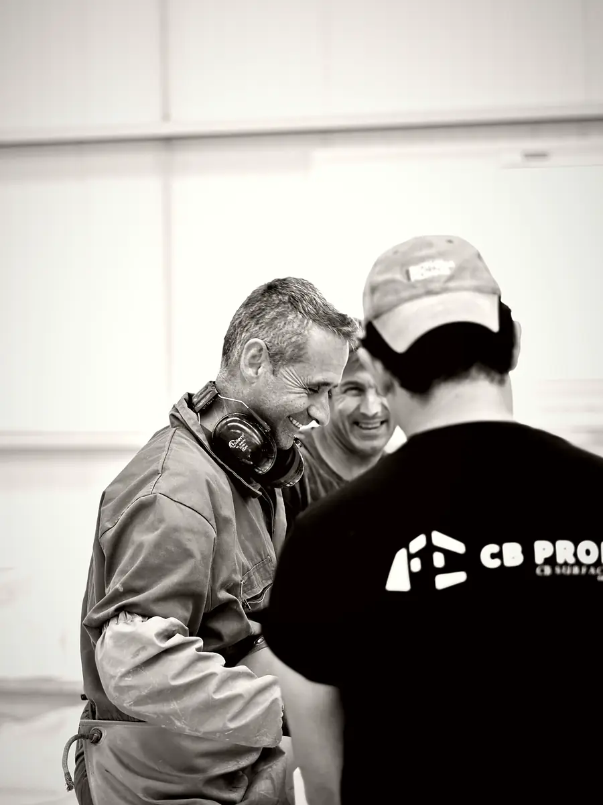
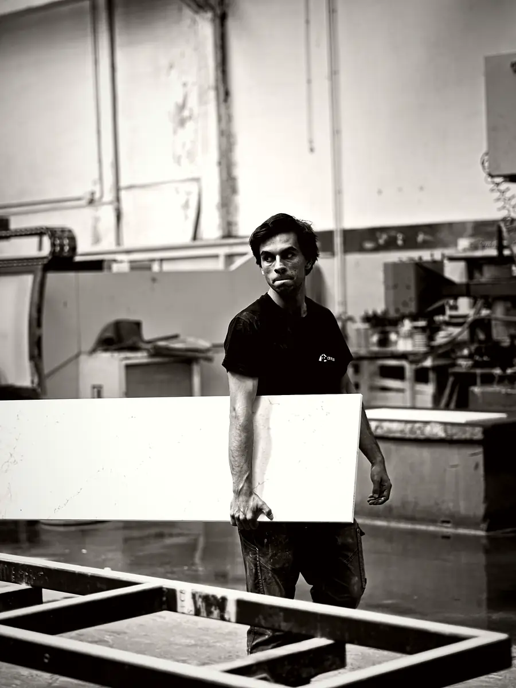

CB Prod · Mafra, Portugal
Votre partenaire de fabrication sur mesure, de la matière première à la livraison
Cuisinistes, marbriers, architectes, agenceurs, distributeurs et entreprises du bâtiment : CB Prod fabrique pour vous, en sous-traitance, des plans de travail et des pièces en pierre sur mesure. Vous nous transmettez vos plans et informations techniques, nous étudions, façonnons, contrôlons et livrons. Le relevé sur chantier et la mise en place restent chez vous ou vos partenaires.
Les professionnels pour qui nous fabriquons
Nous travaillons exclusivement pour des clients professionnels, qui gardent la relation avec leur propre client :
- cuisinistes, qui nous confient les plans de travail, îlots et crédences de leurs cuisines ;
- marbriers, qui sous-traitent une partie de leur façonnage en période de forte charge ou pour des matériaux qu'ils ne travaillent pas ;
- architectes et architectes d'intérieur, qui cherchent un fabricant capable de suivre un dessin exigeant ;
- agenceurs et menuisiers, pour les plans, comptoirs et habillages de leurs aménagements ;
- distributeurs et entreprises du bâtiment, pour des pièces sur mesure livrées sur leurs chantiers.
Chacun a ses contraintes : un planning à tenir, un client final à rassurer, un rendu conforme à ce qui a été présenté. Notre rôle est de fabriquer juste, de contrôler et de livrer dans les conditions convenues.
Le partenaire de fabrication du groupe CB Surfaces et des indépendants
CB Prod est le partenaire de fabrication des sociétés du groupe CB Surfaces, qui regroupe les marques CB Surfaces, Easy Plan et Kitchenfab. Fabriquer chaque jour pour ces marques exige une organisation rigoureuse, des méthodes de contrôle éprouvées et une vraie régularité dans la qualité.
Nous mettons ce même niveau d'exigence au service d'une clientèle professionnelle indépendante en France, au Portugal et à l'international. Que vous commandiez une pièce isolée ou des séries régulières, vos plans sont étudiés avec la même attention et vos pièces passent par les mêmes étapes de façonnage et de contrôle.
Notre ambition est claire : devenir un partenaire de fabrication de référence en Europe, reconnu pour son savoir-faire, sa précision, sa réactivité et la qualité de ce qui sort de l'usine.
Comment travailler ensemble
Chaque commande suit le même parcours, simple et documenté :
- vous nous envoyez vos plans cotés et fichiers techniques, par exemple en DXF, DWG ou PDF, avec le matériau, les finitions, les chants et les découpes ;
- nous étudions le dossier, optimisons le débit et vous signalons tout point à clarifier ;
- vous recevez un devis sous 48 heures ouvrées ;
- après validation des plans définitifs, la fabrication démarre dans notre usine de Mafra ;
- chaque pièce est contrôlée, conditionnée et livrée à l'adresse que vous indiquez.
Le partage des rôles est clair : vous restez responsable du relevé sur chantier et de la mise en place, directement ou par vos partenaires. Nous restons responsables de la fabrication conforme à vos plans validés et de la livraison. Un interlocuteur suit votre dossier du devis à l'expédition.
Matériaux, approvisionnement et documentation
Nous sélectionnons et achetons nos matériaux auprès de fournisseurs internationaux, ce qui vous évite de gérer vous-même l'approvisionnement des dalles. Notre catalogue couvre plusieurs familles :
- pierres naturelles : granit, marbre et quartzite, y compris les versions traitées Sensa et Texta ;
- quartz : Silestone®, Compac, Stone Italiana et MStone ;
- céramiques : Dekton®, The Size, Materia, Infinity et MStone ;
- Corian®, Minéralis et pierres recyclées.
Pour chaque gamme, nous vous transmettons la documentation technique utile à vos dossiers et à vos clients : caractéristiques, épaisseurs disponibles, recommandations d'entretien. Les garanties des fabricants s'appliquent selon les gammes, avec par exemple 20 ans sur le Minéralis. Vous pouvez ainsi présenter à votre client une matière adaptée à son budget et à son usage, avec des informations fiables.
L'atelier en images

L'équipe de l'atelier 
Transport d'une pièce finie 
Lecture du plan avant découpe
Vos questions
Comment commencer à travailler avec CB Prod ?
Écrivez à direction@cbproducao.com ou appelez le +33 (1) 88 32 64 49 depuis la France, le +351 219 672 216 depuis le Portugal. Présentez votre entreprise, votre métier et le type de projets que vous réalisez, puis envoyez-nous un premier dossier avec plans et matériaux. Nous l'étudions et vous répondons avec un devis sous 48 heures ouvrées.
Qui est responsable des cotes et de la mise en place ?
Vous, ou vos partenaires. CB Prod ne réalise ni relevé de mesures sur chantier ni mise en place. Nous fabriquons d'après les plans et dimensions que vous validez, après avoir vérifié leur cohérence et signalé les points qui nous semblent à confirmer. Une fois livrées et contrôlées, les pièces sont mises en œuvre par vos équipes ou les entreprises avec lesquelles vous travaillez.
Puis-je venir visiter l'usine avec mon client ?
Bien sûr. Nous accueillons les professionnels accompagnés de leurs clients à Igreja Nova, du lundi au vendredi de 8h00 à 17h30, sur rendez-vous. C'est souvent le meilleur moyen de valider ensemble une dalle de pierre naturelle, un coloris ou une finition, et de lever les dernières hésitations avant de lancer la fabrication.
À voir aussi
Envoyez-nous vos plans
Plans cotés, fichiers techniques, matériau et finitions : nous étudions votre demande et vous répondons sous 48 heures ouvrées.